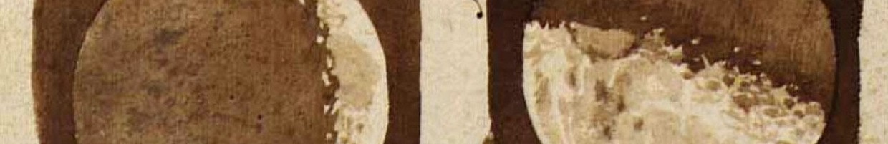

Fisica Matematica 2 #
Modulo per il corso di laurea triennale in Matematica
Materiale di riferimento #
I due testi di riferimento del corso saranno
- Meccanica Analitica di A. Fasano e S. Marmi
Bollati Boringhieri, 1994.
La versione inglese del testo è consultabile online. - Metodi matematici della meccanica classica, di V. I. Arnold
Editori Riuniti University Press, 2010.
Ulteriori testi estremamente utili per la consultazione sono
- Meccanica classica, di H. Goldstein, C. Poole, J. Safko
Zanichelli, 2005. - The elements of mechanics, di G. Gallavotti
Ipparco, 2007. - Fisica teorica 1. Meccanica, di L.D. Landau, E.M. Lifšits
Editori Riuniti University Press, 2010.
Prova d’esame #
L’appello d’esame ordinario consiste di una prova scritta di due ore, seguita da una prova orale condizionata al superamento della prova scritta con un punteggio di almeno 16 punti su 30. In questa pagina sono raccolte le prove già assegnate. Gli studenti interessati a visionare la correzione della loro prova scritta possono contattarmi per un appuntamento nel mio ufficio. L’iscrizione ad ogni appello ordinario si apre due mesi prima dell’appello stesso, e si chiude categoricamente una settimana prima della data d’esame: non sono ammesse iscrizioni oltre la scadenza. Sono fissati sei appelli durante l’anno: due durante la sessione invernale (W), tre durante la sessione estiva (S), uno durante la sessione autunnale (A).
| W1 | W2 | S1 | S2 | S3 | A1 | |
|---|---|---|---|---|---|---|
| 2025 | — | — | 16-06 | 07-07 | 24-07 | TBA |
